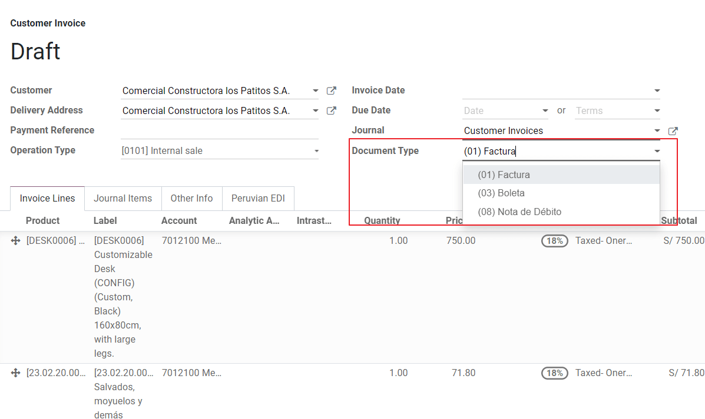
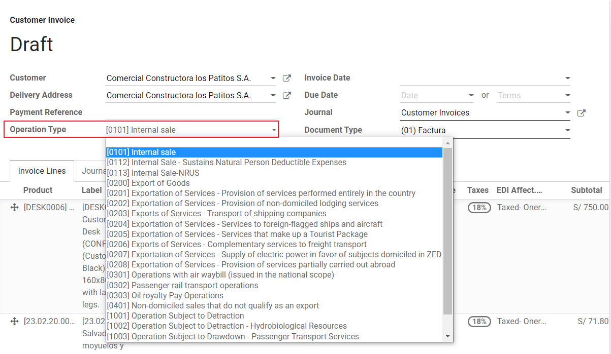

ペルー¶
モジュール¶
Install the following modules to utilize all the current features of the Peruvian localization.
名称 |
技術名 |
説明 |
|---|---|---|
Peru - Accounting |
|
Adds accounting features for the Peruvian localization, which represent the minimal configuration required for a company to operate in Peru and under the SUNAT regulations and guidelines. The main elements included in this module are the chart of accounts, taxes, document types. |
Peru - E-invoicing |
|
Includes all technical and functional requirements to generate and receive electronic invoices online based on the SUNAT regulations. |
Peru - Accounting Reports |
|
Includes the following financial reports:
|
Peruvian - Electronic Delivery Note |
|
Adds the delivery guide (Guía de Remisión), which is needed as proof that you are sending goods between A and B. It is only when a delivery order is validated that the delivery guide can be created. |
Peru - Stock Reports |
|
Enables the PLE reports for permanent inventory record in physical units and permanent valued inventory records. |
Peruvian eCommerce |
|
Enables the identification type in eCommerce checkout forms and the ability to generate electronic invoices. |
Peruvian - Point of Sale with PE Doc |
|
Enables contact fiscal information to be editable from a PoS Session to generate electronic invoices and refunds. |
注釈
Odooはデータベースの作成時に選択された国に応じて、会社に適したパッケージを自動的にインストールします。
The Peruvian - Electronic Delivery Guide module depends on the Inventory application to be installed.
設定¶
ペルー語ローカライゼーションモジュールのインストール¶
*アプリ*でペルーを検索し、ペルーEDIモジュールのインストールをクリックして下さい。このモジュールは*Peru - 会計*と依存関係があります。この最後のモジュールがインストールされていない場合、OdooはEDI内に自動的にインストールします。

注釈
国としてペルーを選択してデータベースをゼロからインストールすると、Odooは自動的にベースモジュールをインストールします: ペルー - 会計。
会社の設定¶
会社の基本情報に加えて、国としてペルーを設定する必要があります。これは電子顧客請求書を正しく機能させるために不可欠です。**住所タイプコード**は、企業がRUC(ユニークコントリビューター登録)を登録する際にSUNATが割当てた事業所コードです:

ちなみに
住所タイプコードが不明な場合は、デフォルト値: 0000に設定することができます。誤った値が入力された場合、電子顧客請求書の検証でエラーが発生する可能性がありますのでご注意下さい。
注釈
NIFはRUCフォーマットに従って設定して下さい。
勘定科目表¶
勘定科目表は、ローカリゼーションモジュールに含まれるデータセットの一部としてデフォルトでインストールされており、勘定科目は以下で自動的にマッピングされます:
税金
デフォルト買掛金勘定
デフォルト売掛金勘定
ペルーの勘定科目表は、いくつかのカテゴリに分類され、NIIF会計と互換性のある最新版の`PCGE(一般事業主向けプラン)`に基づいています。
会計設定¶
モジュールがインストールされ、会社の基本情報が設定されたら、電子顧客請求書に必要な要素を設定する必要があります。そのためには にアクセスして下さい。
基本コンセプト¶
ペルー語ローカライズに欠かせない用語をご紹介します:
EDI: Electronic Data Interchangeの略で、ここでは電子顧客請求書を指します。
SUNAT: is the organization that enforces customs and taxation in Peru.
OSE: 電子サービスオペレータ、 OSE SUNATの定義.
CDR: 領収書認証 (Constancia de Recepción).
SOL認証: Sunat Operaciones en Línea。ユーザとパスワードはSUNATが提供し、オンラインオペレーションシステムへのアクセスを許可します。
署名プロバイダー¶
ペルーの電子顧客請求書の要件として、ドキュメントへの署名プロセスとSUNAT検証済応答を管理する署名プロバイダーを選択する必要があります。Odooは3つのオプションを提供しています:
IAP (Odooアプリ内課金)
Digiflow
SUNAT
各オプションの詳細と注意事項については、以下のセクションを参照して下さい。
IAP (Odooアプリ内課金)¶
デジタル証明書がサービスの一部として含まれていることを考慮すると、これはデフォルトであり、推奨されるオプションです。

IAPとは?¶
これはOdooが直接提供する署名サービスです。このサービスは次のプロセスを担います:
電子顧客請求証明書を提供しますので、ご自身で顧客請求書を取得する必要はありません。
ドキュメントをOSE、この場合はDigiflowに送信します。
OSE検証とCDRを受信します。
どのように機能しますか？¶
電子ドキュメントを処理するにはクレジットが必要です。Odooでは新規データベースに1000クレジットを無料で提供しています。このクレジットを消費した後は、クレジットパッケージを購入する必要があります。
クレジット |
EUR |
|---|---|
1000 |
22 |
5000 |
110 |
10,000 |
220 |
20,000 |
440 |
クレジットは、OSEに送られるドキュメントごとに消費されます。
重要
検証済エラーがあり、ドキュメントを再度送信する必要がある場合は、1クレジットが追加で請求されます。したがって、OSEにドキュメントを送信する前に、全ての情報が正しいことを確認することが非常に重要です。
何が必要ですか？¶
Odooでは企業契約が有効化され、本番環境で利用を開始すると、最初の1000クレジットを消費した時点でクレジットを購入する必要があります。
DigiflowはIAPで使用されるOSEであるため、SUNATのウェブサイト上で貴社の公式OSEとして加盟する必要があります。これは簡単な手続きです。詳しくは、OSE提携ガイド`をご覧下さい:。
Digiflowを正規PSEとして登録します。以下を確認して下さい: PSE加盟ガイド。
Digiflow¶
このオプションは、IAPサービスを使用する代わりに、ドキュメント検証済を直接Digiflowに送信することができます。この場合、以下を考慮する必要があります:
電子証明書を購入します: 公式仕入先リストの詳細、および仕入先リストの取得方法については、以下をご覧下さい: `SUNATデジタル認証情報<https://cpe.sunat.gob.pe/informacion_general/certificados_digitales/>`_
サービス契約に直接 `Digiflow <https://www.digiflow.pe/>`_で署名して下さい。
SOL認証情報。

SUNAT¶
SUNATとの直接契約を希望する場合、設定でこのオプションを選択することも可能です。この場合、以下のことを考慮する必要があります: - SUNAT認証プロセスの承認を得て下さい。
電子証明書を購入します: 公式仕入先リストの詳細、および仕入先リストの取得方法については、以下をご覧下さい: `SUNATデジタル認証情報<https://cpe.sunat.gob.pe/informacion_general/certificados_digitales/>`_
SOL認証情報を提供します。
重要
SUNATとの直接接続を使用する場合、SOLユーザは会社RUT + ユーザIDで設定する必要があります。例: 20121888549JOHNSMITH
テスト環境¶
Odooは本番稼動前に有効化できるテスト環境を提供しています。
テスト環境とIAP署名を使用する場合、取引は全てデフォルトで検証済になるため、テストクレジットを購入する必要はありません。
ちなみに
デフォルトでは、データベースは本番環境で動作するように設定されていますが、必要に応じてテストモードを有効にして下さい。
証明書¶
Odoo IAPを使用しない場合、電子顧客請求書の署名を生成するには、拡張子``.pfx``の電子証明書が必要です。このセクションに進み、ファイルとパスワードを読込んで下さい。

複数通貨¶
The official currency exchange rate in Peru is provided by the SUNAT. Odoo can connect directly to its services and get the currency rate either automatically or manually.

:doc:`複数通貨 <../accounting/get_started/multi_currency>`の詳細については、ドキュメントの次のセクションを参照して下さい。
マスタデータ設定¶
税金¶
ローカライゼーションモジュールの一環として、税は、関連する会計アカウントと電子顧客請求書の設定とともに自動的に作成されます。

EDI設定¶
税設定の一部として、電子顧客請求書に必要な3つの新しいフィールドがあります。デフォルトで作成された税にはこのデータが含まれていますが、新しい税を作成する場合は、フィールドに入力して下さい:

会計ポジション¶
ペルーローカライズをインストールすると、デフォルトで2つの主要な会計ポジションが含まれます。
Extranjero - Exportación: 輸出取引において、この会計ポジションを顧客に設定します。
現地ペルー: 現地の顧客にこの会計ポジションを設定します。
ドキュメントタイプ¶
ペルーを含むいくつかのラテンアメリカ諸国では、顧客請求書や仕入先請求書のような会計取引は、政府の財政当局、この場合はSUNATによって定義されたドキュメントタイプによって分類されています。
各ドキュメントタイプは、それが割当てられる仕訳帳ごとに一意の付番を持つことができます。ローカリゼーションの一環として、ドキュメントタイプにはそのドキュメントが適用される国が含まれます。
ドキュメントタイプに必要な情報はデフォルトで含まれているので、ユーザはこのビューで何も入力する必要はありません:

警告
現在、顧客請求書でサポートされているドキュメントは以下の通りです: 顧客請求書、 Boleta、デビットノート、クレジットノート。
仕訳帳¶
販売仕訳帳を作成する際には、仕訳帳の標準フィールドに加えて、以下の情報を入力する必要があります:
ドキュメントを使用¶
このフィールドは、仕訳帳がドキュメントタイプを使用するかどうかを定義するために使用します。これは仕訳帳と販売仕訳帳にのみ適用され、ペルーで利用可能なさまざまなドキュメントタイプに関連付けることができます。デフォルトでは、仕訳帳は全てドキュメントを使用します。
電子データ交換¶
This section indicates which EDI workflow is used in the invoice, for Peru we must select “Peru UBL 2.1”.

警告
デフォルトでは、Factur-X (FR) の値が常に表示されます。必ず手動でチェックを外して下さい。
取引先¶
認証タイプとVAT¶
ペルーのローカライゼーションの一環として、SUNATによって定義された識別タイプが取引先フォームで利用できるようになりました。この情報は、ほとんどの取引において、送り送信会社および顧客のいずれにおいても不可欠です。記録にこの情報を必ず入力して下さい。

プロダクト¶
ペルーのローカライズには、プロダクトの基本情報に加え、UNSPCコードの設定が必要です。

使用とテスト¶
顧客請求書¶
EDI要素¶
マスターデータの設定が完了したら、販売オーダから、または手動で請求書を作成することができます。請求処理についての当社ページ に記載されている基本的な請求書情報の他に、ペルーEDIに必要なフィールドがいくつかあります:
Document type: The default value is “Factura Electronica” but you can manually change the document type if needed and select Boleta for example.
Operation type: This value is required for Electronic Invoice and indicates the transaction type, the default value is “Internal Sale” but another value can be selected manually when needed, for example Export of Goods.
EDI影響理由: 顧客請求書の明細には、“EDI影響理由”というフィールドがあり、表示されるSUNATリストに基づいて税範囲を決定します。デフォルトでロードされた全ての税はデフォルトのEDI影響理由と関連付けられていますが、必要であれば顧客請求書作成時に手動で別のEDI影響理由を選択することができます。

請求書検証¶
顧客請求書の情報が全て正しいことを確認したら、検証に進みます。この操作で仕訳が登録され、電子請求書ワークフローがトリガされ、顧客請求書がOSEとSUNATに送信されます。顧客請求書の上部に以下のメッセージが表示されます:

非同期とは、顧客請求書の記帳済後にドキュメントが自動送信されないことを意味します。
電子請求書ステータス¶
送信予定: ドキュメントをOSEに送信する準備ができたことを示します。これはOdooが1時間ごとに実行する*クロン*によって自動的に行われるか、ユーザが "Sent now "ボタンをクリックしてすぐに送信することができます。

Sent: Indicates the document was sent to the OSE and was successfully validated. As part of the validation a ZIP file is downloaded and a message is logged in the chatter indicating the correct Government validation.

検証済エラーが発生した場合、電子顧客請求書のステータスは“送信予定”のままとなり、修正を行って請求書を再送信することができます。
警告
検証済ドキュメントを送信するたびに1クレジットが消費されます。つまり、顧客請求書にエラーが検出され、再度送信する場合は、合計2クレジットが消費されます。
よくあるエラー¶
OSEまたはSUNATから拒否される理由は複数ありますが、このような場合、Odooは顧客請求書の上部にエラーの詳細と、最も一般的なケースでは問題を解決するためのヒントを示すメッセージを送信します。
検証エラーを受け取った場合、2つの選択肢があります:
エラーが仕入先、顧客、税のマスターデータに関連している場合、レコードに変更を適用し(例：顧客の識別タイプ)、それが完了したら、再試行ボタンをクリックするだけです。
エラーが請求書に直接記録されているデータ(オペレーションタイプ、明細の欠落)に関連している場合、正しい解決策は、請求書をドラフトにリセットし、変更を適用した後、再度SUNATに送り、再度検証を行うことです。

詳細については `SUNATのよくあるエラー <https://www.nubefact.com/codigos-error-sunat/>`_をご覧下さい。
請求書PDFレポート¶
SUNAT が顧客請求書を受理し、検証済になると、顧客請求書 PDF レポートを印刷することができます。このレポートには、顧客請求書が有効なドキュメントであることを示すQRコードが含まれています。

IAPクレジット¶
OdooのElectronic IAPは1000クレジットを無料で提供します。このクレジットを本番データベースで消費した後、取引を処理するために新しいクレジットを購入する必要があります。
クレジットを使い切ると、顧客請求書の上部に赤いラベルが表示され、追加クレジットが必要であることを示します。メッセージに記載されているリンクにアクセスすれば、簡単に購入できます。

IAPのサービスには、クレジット数に応じて価格が異なるパッケージが含まれています。IAPの料金表は常にEURで表示されます。
特別な使用例¶
取消処理¶
例えば、誤って顧客請求書を作成してしまった場合などです。顧客請求書がすでに送信され、SUNATによって検証済の場合、 取消依頼ボタンをクリックして下さい:

顧客請求書を取消すには、取消理由をご記入下さい。
電子請求書ステータス¶
To Cancel: Indicates the cancellation request is ready to be sent to the OSE, this can be done either automatically by Odoo with a cron that runs every hour, or the user can send it immediately by clicking on the button “Send now”. Once it is sent, a cancellation ticket is created, as a result the next message and CDR File are logged in the chatter:

Cancelled: Indicates the cancellation request was sent to the OSE and was successfully validated. As part of the validation a ZIP file is downloaded and a message is logged in the chatter indicating the correct Government validation.

警告
One credit is consumed on each cancellation request.
Export invoices¶
輸出請求書を作成する際には、次の点を考慮して下さい:
顧客のIDタイプは外国IDでなければなりません。
顧客請求書のオペレーションタイプは輸出タイプでなければなりません。
顧客請求書の明細に含まれる税はEXP税でなければなりません。

前払金¶
前払顧客請求書を作成し、関連する支払を適用します。
Create the final invoice without considering the advance payment.
前払金額を記載した最終顧客請求書のクレジットノートを作成します。
クレジットノートと最終顧客請求書を消込します。
最終顧客請求書の残金は、通常の支払取引で支払われる必要があります。
顧客請求書¶
When creating invoices that is subject to Detractions, take into account the next considerations:
顧客請求書に含まれるプロダクトは全てこれらのフィールドが設定されている必要があります:

顧客請求書のオペレーションタイプは ``1001``である必要があります

クレジットノート¶
検証済の顧客請求書の訂正や返金が必要な場合、クレジットノートを作成する必要があります。そのためには、“クレジットノートを追加する”ボタンをクリックして下さい。ペルー語ローカライゼーションの一環として、クレジットを証明する必要があります。

ちなみに
最初のクレジットノートを作成する際、クレジット方法を選択してください: これにより、クレジットノートの付番を定義することができます。
デフォルトでは、クレジットノートはドキュメントタイプに設定されています:

ワークフローを終了するには、以下の手順に従って下さい クレジットノートに関する当社ページ.
注釈
クレジットノートのEDIワークフローは顧客請求書と同様に機能します。
デビットノート¶
ペルーローカライズの一環として、既存のドキュメントからクレジットノートを作成する以外に、デビットノートを作成することができます。この場合、“デビットノートを追加”ボタンをクリックして下さい。
デフォルトでは、デビットノートはドキュメントタイプに設定されています。
電子配送ガイド 2.0¶
GRE(Guía de Remisión Electrónica) は、倉庫や施設など、ある場所から別の場所への商品の輸送や転送をサポートするために荷送人が作成する電子ドキュメントです。Odooでは、この機能を使用する前にいくつかの設定ステップが必要です。
電子ドキュメントの使用は義務付けられており、プロダクトの転送が必要な納税者は、単一簡易課税制度(régimen único simplificado：RUS)を除き、SUNAT|によって義務付けられています。
配送ガイドタイプ¶
送信者¶
販売、サービスの提供(加工を含む)、商品の割当て、同一企業内および他者間での商品の転送が行われた場合に発行されます。
この配送ガイドは、商品の所有者(つまり送り主) が出荷の最初に発行します。送り主の配送ガイドはOdooでサポートされています。
配送業者¶
配送業者 の配送ガイドタイプは、運送サービスを説明するためにドライバー(または配送業者)が行う配送ガイドの種類を示します。
この配送ガイドは配送業者が発行するもので、貨物が公共交通機関を利用する際には、各荷送人に発行する必要があります。
重要
配送業者の配送ガイドはOdooではサポートされて いません 。
配送タイプ¶
非公開¶
個人 輸送タイプオプションは、所有者が自家用車を使用して商品を転送する場合に使用します。この場合、送り主の配送ガイドを発行する必要があります。
パブリック¶
公共 輸送タイプオプションは、外部の配送業者が商品を仕訳する場合に使用します。この場合、送り主の配送ガイドと配送業者の配送ガイドの2つを発行する必要があります。
SUNATへの直接提出¶
Odooでの GRE 配送ガイドの作成は、電子ドキュメントプロバイダー: IAP, Digiflow, または |SUNAT| に関わらず |SUNAT|に直接送信される 必要があります。
必要な情報¶
電子配送ガイドのバージョン2.0では、一般設定、車両、連絡先、プロダクトに関する追加情報が必要です。一般設定では、 |SUNAT|ポータルから取得できる新しい認証情報を追加する必要があります。
取消¶
以下の条件が満たされる限り、発送人と配送業者の 双方 が電子配送状を取消すことができます:
The shipment has not been initiated.
発送が開始されている場合、最終目的地に到着する前に受取人を変更する必要があります。
重要
SUNAT は "Anula "という言葉を使わず、取消には "Dar de baja "という言葉を使うようになりました。
テスト¶
SUNAT はテスト環境をサポートしていません。つまり、誤って生成された配送ガイドは SUNAT へ送信 されます。
間違ってこのような環境で運送状を作成してしまった場合は、SUNAT ポータルから削除する必要があります。
設定¶
重要
現在Odooでサポートされている運送状の種類は送り主の電子 GRE のみです。
配送ガイドはOdoo 在庫 アプリ、 l10n_pe_edi and l10n_pe modules に依存しています。
電子ドキュメントの作成には、2人目のユーザを追加する必要があります。
After following the steps to configure the electronic invoicing
and the master data, install the
Peruvian - Electronic Delivery Note 2.0 module (l10n_pe_edi_stock_20).
Next, you need to retrieve the client ID and client secret from SUNAT. To do so, follow the manual de servicios web plataforma nueva GRE.
注釈
In the SUNAT portal, it is important to have the correct access rights enabled, as they may differ from the user set for electronic invoicing.
These credentials should be used to configure the delivery guide general settings from , and scroll down to the Peru Delivery Guide section.
Configure the following Sunat Delivery Guide API fields:
Guide Client ID: the unique API client ID generated in the SUNAT portal
Guide Client Secret: the unique API client secret generated in the SUNAT portal
Guide SOL User: the RUC Number + SOL username
Guide SOL Password: the SOL user password
注釈
SUNAT ポータルで GRE API 認証情報を生成する際に選択したユーザに応じて、 ガイドSOLユーザ フィールドの RUC + UsuarioSol (例: 20557912879SOLUSER) 形式に従う必要があります。
オペレータ¶
*オペレータ*とは、配送ガイドが*個人*輸送である場合の車両の運転手のことです。
新規オペレータを作成するには に行き、連絡先情報を入力して下さい。
まず、 会社タイプ として 個人 を選択します。次に、連絡先フォームの 会計 タブに オペレータライセンス を追加します。
顧客の住所については、以下のフィールドが完全であることを確認して下さい:
地域
登録番号 (DNI/RUC)
登録番号

配送業者¶
配送業者 は、配送ガイドが 公共 交通機関を利用する場合に使用されます。
新しい配送業者を作成するには に行き、連絡先情報を入力します。
まず、 会社 を 会社タイプ`として選択します。そして、 :guilabel:`MTC 登録番号 を追加し、 認可発行機関, および 認可番号 を追加します。
会社の住所については、以下のフィールドが完全であることを確認して下さい:
地域
登録番号 (DNI/RUC)
登録番号

車両¶
利用可能な車両を設定するには、 に移動し、車両に必要な情報を車両フォームに記入して下さい:
車両名
ナンバープレート
M1 か Lか?
特別認可発行機関
認可番号
デフォルトオペレータ
会社
重要
:guilabel:`車輪が4つ以下、または座席が8つ以下の車両はM1またはLか？を確認することが重要です。

プロダクト¶
利用可能なプロダクトを設定するには、 に移動し、設定するプロダクトを開きます。
プロダクトフォームの該当する情報が完全に設定されていることを確認して下さい。Partida Arancelaria (関税項目)フィールドに入力する必要があります。
GREを生成する¶
販売ワークフローで在庫からの配送が作成されたら、転送フォームの右上にある|GRE| フィールドの入力が完了していることを確認して下さい:
輸送タイプ
転送理由
出発開始日
また、 Guia de Remision PE タブの 車両 と オペレータ フィールドに記入する必要があります。
転送フォームの左メニューに Generar Guia de Remision ボタンが表示されるには、配送転送が 完了 とマークされている必要があります。

転送フォームが SUNAT によって正しく検証されると、生成されたXMLファイルがチャターで利用可能になります。これで、転送の詳細と SUNAT が検証済のQRコードが記載された納品書を印刷できるようになります。

よくあるエラー¶
Diferente prefijo para productos (T001 en algunos, T002 en otros)現在のところ、Odooはプロダクトのプレフィクスの自動化をサポートしていません。各プロダクト出力に対して手動で行うことができます。これは在庫可能品以外でも可能です。ただし、トレーサビリティがなくなることにご注意下さい。
2325 - GrossWeightMeasure - El dato no cumple con el formato establecido "Hace falta el campo" "Peso"" en el productoこのエラーはプロダクトの重量が`0.00`に設定されている場合に発生します。これを修正するには、運送状を取消し、再作成する必要があります。新しい運送状を作成する前にプロダクトの重量を修正して下さい。
`JSONDecodeError: 配送ガイド作成時に期待される値: 行 1 列 1 (文字 0) `
このエラーはSOLユーザの問題から発生する典型的な例です。ユーザの SUNAT との接続を確認して下さい; SOLユーザは会社RUT + ユーザIDで確立されている必要があります。例
2012188549JOHNSMITH.El número de documento relacionado al traslado de mercancía no cumple con el formato establecido: error: documento relacionado*関連ドキュメントタイプ*と*関連ドキュメント番号*フィールドは、顧客請求書と入荷にのみ適用されます。
400顧客エラー: URLに対する不正な要求このエラーはOdooから解決することはできません; 新しいユーザを作成する必要があるかもしれません。
要素 'cac:BuyerCustomerParty'` から始まる無効なコンテンツが見つかりました。
このエラーは転送理由が その他 に設定されている場合に発生します。他のオプションを選択して下さい。SUNAT の運送状ガイドの公式ドキュメントによると、転送理由 03(第3者への出荷を伴う販売) または 12(その他) はOdooでは機能しません。
Duda cliente: consumo de créditos IAP al usar GRE 2.0IAPを使用するライブ顧客の場合、(理論上は)クレジットは消費されません。なぜなら、これらのドキュメントはOSEを経由しない、つまり、これらのドキュメントは SUNAT に直接送信されるためです。
Errores con formato credenciales GRE 2.0 (traceback error)現在、Odooは認証情報がデータベースに正しく設定されていないというメッセージの代わりに、トレースバックと共にエラーをスローします。データベースでこの問題が発生した場合、認証情報を確認して下さい。
eコマース電子請求¶
First, install the Peruvian eCommerce (l10n_pe_website_sale) module.
The Peruvian eCommerce module enables the features and configurations to:
allow clients to create online accounts for eCommerce purposes;
support required fiscal fields in the eCommerce application;
receive payments for sales orders online;
generate electronic documents from the eCommerce application.
注釈
The Peruvian eCommerce module is dependent on the previous installation of the Invoicing or Accounting app, as well as the Website app.
設定¶
After configuring the Peruvian electronic invoicing flow, complete the following configurations for the eCommerce flow:
プロダクト: Set the Invoicing Policy to Ordered quantities and define the desired Customer taxes.
配送: For each shipping method, set the Provider field to Fixed Price. Then, set a Fixed Price amount greater than
0.00(not zero), as the shipping method price is added to the invoice line.
注釈
Mercado Pago is an online payment provider supported in Odoo that covers several countries, currencies, and payment methods in Latin America.
Make sure to define a Sales Price on the Delivery Product of the shipping method to prevent errors when validating the invoice with SUNAT.
To offer free delivery, manually remove the Delivery Product, or at least use
$0.01(one cent) for the invoice to be validated with SUNAT.
eコマース用請求フロー¶
Once the configurations are all set, fiscal input fields will be available during the checkout process for signed-in customers.
When customers enter their fiscal data at checkout and complete a successful purchase, the invoice is generated with the corresponding EDI elements. The document type (Boleta/Factura) is selected based on their tax ID (RUC/DNI). The invoice must then be sent to the OSE and the SUNAT. By default, all published invoices are sent once a day through a scheduled action, but you can also send each invoice manually if needed.
Once the invoice is validated with SUNAT, customers can download the .zip file with the CDR, XML, and PDF files directly from the customer portal by clicking the Download button.
レポート¶
Permanent inventory reports: PLE 12.1 and PLE 13.1¶
Odoo can produce two permanent inventory reports as .txt files for Peruvian accounting: PLE 12.1
and PLE 13.1. All inventory transactions made need to be reported.
PLE 12.1 only tracks inventory in physical units, focusing on the inflow and outflow of goods for effective management and planning.
PLE 13.1 tracks both physical quantities and monetary values of inventory, providing a comprehensive view for tax and management purposes.
Both reports must be maintained semi-annually (January-June and July-December), with monthly transaction details reported within these periods. The submission deadlines are October 1st for the first semester and April 1st for the second semester, in accordance with the Resolución de Superintendencia N° 169-2015.
設定¶
Before generating the PLE 12.1 or PLE 13.1 reports, make sure the Peru - Stock
Reports (l10n_pe_reports_stock) module is installed, then update the fields for:
プロダクト¶
Several configurations related to the product or product category are necessary for PLE reporting:
Type of existence: For all products needing PLE reporting, go to the product record's Accounting tab and select the Type of Existence according to SUNAT's table 5 for inventory reporting.
Automatic inventory valuation: For storable goods (products with tracked inventory), use automatic inventory valuation. Once automatic inventory valuation is enabled, this valuation method can be enabled for a product's product category.
Costing method: Storable goods must use a costing method other than Standard Price, as the journal entries generated from stock moves are used to populate the PLE reports.
倉庫¶
When setting up a warehouse, the Annex Establishment Code field must be filled. This code acts as a unique ID for each warehouse and should only be a numeric combination, containing between 4 to 7 digits.
Inventory transfers¶
Transferring inventory is a key process captured in the PLE 12.1 and PLE 13.1 reports. Inventory transfers include both incoming and outgoing shipments.
When validating an inventory transfer (either on a warehouse receipt or delivery order), select the Type of Operation (PE) performed according to SUNAT's table 12 for permanent inventory reporting.
Generate a .txt file for permanent inventory Kardex reports¶
PLE 12.1 and 13.1 come as two separate books. The books need to be downloaded in .txt file
format from Odoo, and then they should be submitted to the SUNAT PLE software.
On the Inventory Valuation Report, click
the PLE Reports button. Then, select the Period and choose a report to
export: either the PLE 12.1 or PLE 13.1. Odoo generates a .txt file
for the chosen report.

注釈
Only a download of the report in .txt format is available. There is no preview or visualization
available within Odoo.